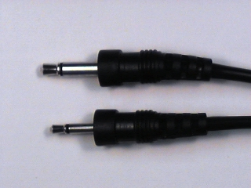

ELEC 240 Lab
Experiment 2.2
Electroacoustic Transducers II
In this section we will discover different ways to detect and change a signal.
Equipment
- Test board
- Speaker
- Microphone
Part A: Microphone
So far we have used an acoustic output device, the speaker, to convert electrical signals to sound. Now we need an input device to convert acoustic signals to electric ones.
-
Get a microphone from the supply room. It has two connectors: we will use the larger one:
 -
Use a BNC patch cord to connect
CH1of the oscilloscope toJ1-1of the test board (refer to the test board pin assigments). -
Plug the microphone into
J1-4of the test board. -
Take a piece of wire and strip 6-7 mm of insulation from each end. The end of the wire should look like this:

Warning
The stripped length of a wire is very important. If it is too short, the insulation can prevent contact within the socket resulting in an intermittent connection. THIS IS ONE OF THE MOST COMMON PROBLEMS IN THE LAB. If it is too long, the exposed portion of the wire can short to other wires.
-
Plug one end of the wire to pin1 and the other end to pin 4. This will connect the microphone to the scope (
CH1). The grounds are automatically connected by the test board.
-
Ensure the following settings on the oscilloscope:
- CH1
- Volts/Div : 5mV
- Time/Div: 1ms
- 1X setting on CH1
-
Speak, sing, or whistle into the microphone and observe the signal on the scope. If the amplitude is too small, you can use the Volts / Div setting to get a little more resolution.
-
Experiment with the Time / Div settings to see what effect it has on the display.
-
Trigger: Drag the trigger icon (arrow followed by a T) just outside the signal display so that it crosses the signal. What happens to the display?
- What is Trigger? The oscilloscope has to continually refresh its display since a continuous signal is being fed to it. If each "sweep" (refresh of data) started at a different place on the signal all we would get is a jumble of waveforms. The trigger sets an origin from which each sweep should start. That way, particularly for periodic signals, the new waveform traces onto the old waveform and the signal appears static.
-
Measure the amplitude of the signal.
-
Produce a sustained vowel sound. Which appears most sinusoidal?
-
Continue producing a sustained vowel sound and measure its frequency (by measuring the period).
-
If you are musically inclined, sing or whistle the note \(A\) and measure its frequency. Otherwise search for the tone and play it on your phone. How does your measured frequency compare with the official value for the frequency of \(A\)? If there is a discrepancy, explain why it might be.
Part B: The Lab PC as a Signal Source
The microphone is a device that converts an acoustic pressure into a voltage. The Lab PC contains a device, the Sound Card, that converts a sequence of numbers into a voltage. This sequence of numbers could represent the samples of a physical signal that you learned about in ELEC 241.
Since the computer can compute functions and the sound card can produce
electrical output we could use the Lab PC as our 'function generator', which
can produce more interesting functions than our VirtualBench FGEN can.
Another advantage is that \(R_{out}\) of the sound card is less than that of the
function generator, so we can connect the speaker directly with less signal
loss. Let's look at a few examples.
-
Plug the sound card cable from the Lab PC (with the 8-pin round connector) into
J2-1on the test board. -
Connect a BNC clip lead to
J1-3and the clips to the loudspeaker. -
Connect the speaker to the sound card speaker output but connecting a piece of wire between pins 3 and 20 on the test board.
-
View the speaker output on
CH1(connect a wire from pin 20 to pin 1). -
Listen to and observe the waveform for the following signals:
-
We'll look at this signal again in a few weeks when we have some more sophisticated analysis tools. In the meantime, based on what you can hear and what you can see on the scope, can you figure out the trick?
-
Disconnect speaker and sound card cable.